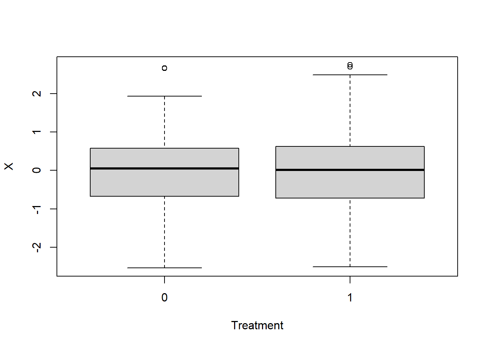
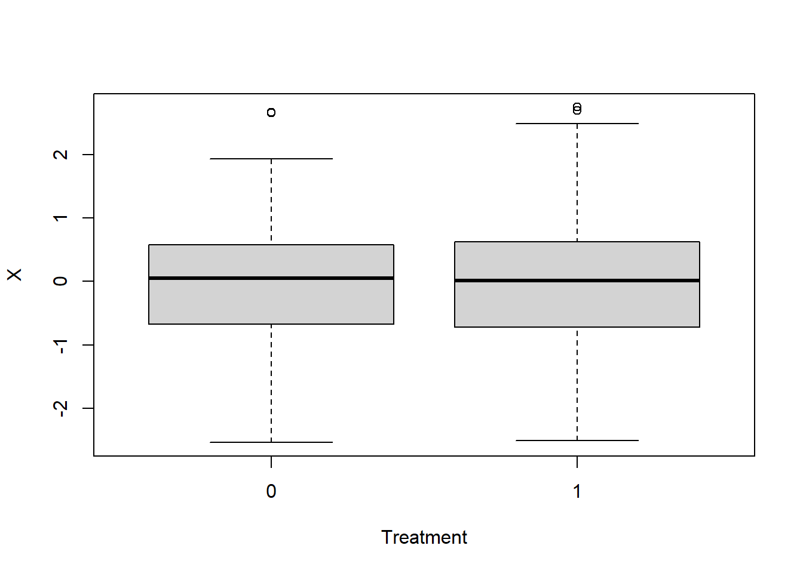
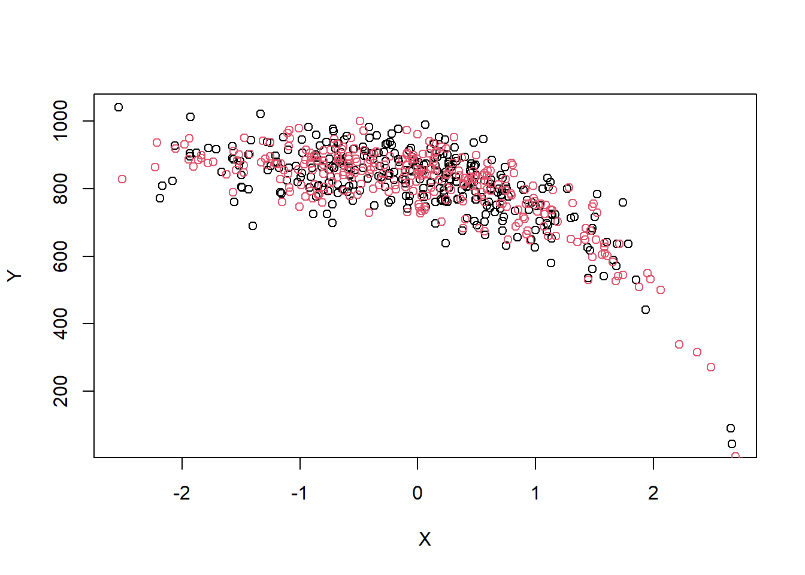

set.seed(302)
x_fixed_1 <- rnorm(600)
a_fixed_1 <- rbinom(600, 1, 0.5)
plot(factor(a_fixed_1), x_fixed_1,
xlab = "Treatment",
ylab = "X")
Dominic Magirr
July 15, 2023
Consider a randomized controlled trial (RCT) with patients \(i=1,..., N\), randomized to treatment \(A_i = 1\) or \(A_i=0\) with probability \(1/2\). Suppose there is a continuous outcome \(Y_i\).
Should we perform inference conditional on the observed \(A\)? For example, are we more interested in a confidence interval \(CI_{A}\) for \(\theta\) (a treatment effect, say) such that
\[P(\theta \in CI_A \mid A) = 1 - \alpha ?\]
Or would we prefer to not condition on \(A\), and aim for a confidence interval \(CI\) such that
\[P(\theta \in CI) = 1 - \alpha \] across multiple realizations of the experiment, each with different \(A\)’s.
As a concrete example, for a simple Gaussian model with known variance \(\sigma^2\), suppose \(N=500\) but we end up with \(N_1= 230\) and \(N_0= 270\). Do we prefer to estimate the variance of the difference-in-means estimator via
\(\frac{\sigma^2}{230} + \frac{\sigma^2}{270}\)
or via
\(\frac{\sigma^2}{250} + \frac{\sigma^2}{250} ?\)
I think it’s fair to say that a majority would prefer the first option, i.e., conditional on \(A\).
Now suppose there is a continuous, prognostic, baseline covariate \(X_i\). Should we perform inference conditional on the observed \((A,X)\)? For example, should we seek a confidence interval \(CI_{A,X}\) such that
\[P(\theta \in CI_{A,X} \mid A, X) = 1 - \alpha \] rather than a confidence interval \(CI_A\) such that
\[P(\theta \in CI_{A} \mid A) = 1 - \alpha ?\]
Undoubtedly, this is a harder question. There are at least two variants of it, depending on whether or not \(X\) is used in the construction of \(CI_A\).
The first variant, where \(X\) is completely ignored in the construction of \(CI_A\), has, I think, been comprehensively dealt with, for example by Stephen Senn in his Seven Myths about Randomization. Having read that article, no one could possibly argue it’s ok to completely ignore \(X\) in this situation.
Of course, if there are multiple prognostic baseline covariates, then it may not be practical to condition on all of them. But this is not the direction I want to go in this blog post. I’d rather stick with the single covariate and try to address the second variant of the question.
The second variant of the question, where \(X\) is used in the construction of \(CI_A\) but we still seek inference conditional on \(A\) but not \(X\), is far less important than the first. In fact, the intervals \(CI_A\) and \(CI_{A,X}\) may even be identical, with only the interpretation different.
Nevertheless, it’s still a question that bugs me. And it does have some, albeit minor, practical consequences.
Suppose I fit an ANCOVA model \(Y_i \sim N(\beta_0 + \beta_1 A_i + \beta_2 X_i, \sigma^2).\) In this case, suppose both \(CI_A\) and \(CI_{A,X}\) are just the standard confidence interval for \(\beta_1\).
When I try to make a statement
\[P(\beta_1 \in CI_{A,X} \mid A, X) = 1 - \alpha \]
I am relying on the correctness of the model. This is true whether I interpret \(\beta_1\) as a conditional treatment effect that is identical across \(X\), or as the marginal treatment effect \(E(Y\mid A = 1) - E(Y\mid A = 0)\).
On the other hand, when I interpret \(\beta_1\) as the marginal treatment effect and make a statement
\[P(\beta_1 \in CI_A \mid A) = 1 - \alpha\] then this does not rely on the correctness of the ANCOVA model, in large samples at least (see e.g., here).
I’m taking for granted here that we’d always agree, at a minimum, to assume that \((A_i, X_i, Y_i)\) are i.i.d. random variables with some (possibly unspecified) reasonable joint distribution \(f\). We might try to link \(f\) to the real world by imagining we take a random sample of patients from an infinite super population and then randomly assign treatment. But of course we do not really take a random sample. And I’m not exactly sure what a super population is.
The preceding argument in favour of \(CI_A\) seems fairly straightforward. It didn’t take me long to write down. To speak in favour of \(CI_{A,X}\) requires getting more philosophical.
This is probably a good point to mention the conditionality principle. Obviously, the type of question I’m asking here is far from new. It has been discussed extensively by many experts starting decades ago, e.g., here, here, here and many more. Even my specific question relative to RCTs has received a lot of attention. This is a good example, among many others. I’d highly recommend reading this work rather than anything I’m about to write.
In a nutshell, an analyst providing us with a confidence interval \(CI_A\) asks us in some sense (which I’ll explain with an example below) to pretend that we haven’t seen \(X\). They (the analyst) have seen it and used it, but we (the consumer) have to pretend we haven’t in order to claim (with a clear conscience) the robustness property described above.
Suppose \(N = 600\) and the distribution of \(X\) in the super population is \(N(0,1)\). Suppose in our particular RCT the observed (A, X) was as follows…
set.seed(302)
x_fixed_1 <- rnorm(600)
a_fixed_1 <- rbinom(600, 1, 0.5)
plot(factor(a_fixed_1), x_fixed_1,
xlab = "Treatment",
ylab = "X")
Now suppose the outcome model is
\[Y_i \mid X_i \sim N(900 + 0 A_i - \exp(X_i + 4), 60^2)\]
So the treatment effect, conditional or marginal, is \(0\).
We can plot \(Y\) against \(X\) for a single realization…
y_ex <- rnorm(600,
mean = 900 - exp(x_fixed_1 + 4),
sd = 60)
plot(x_fixed_1[a_fixed_1 == 0], y_ex[a_fixed_1 == 0],
xlab = "X",
ylab = "Y")
points(x_fixed_1[a_fixed_1 == 1], y_ex[a_fixed_1 == 1],
col = 2)
Under this ‘true’ model, we can check the coverage probability of \(CI_{A,X}\)…
sim_1_fixed <- function(dummy = 0,
x_fixed,
a_fixed){
y <- rnorm(600,
mean = 900 - exp(x_fixed + 4),
sd = 60)
dat <- data.frame(y = y, x = x_fixed, a = a_fixed)
fit <- lm(y ~ a + x, data = dat)
ci <- confint(fit)["a",]
}
ci_list_1 <- purrr::map(rep(0,1000), sim_1_fixed,
x_fixed = x_fixed_1,
a_fixed = a_fixed_1)
ci_mat_1 <- do.call(rbind, ci_list_1)
# check coverage
mean(ci_mat_1[,1] < 0 & ci_mat_1[,2] > 0)[1] 0.819Far below a nominal 95%.
Conversely, if instead of conditioning on the observed \((A, X)\), we only condition on the observed \(A\), we can confirm that the coverage of \(CI_A\) is as expected.
sim_1_random <- function(dummy = 0, a_fixed){
x <- rnorm(600)
y <- rnorm(600,
mean = 900 - exp(x + 4),
sd = 60)
dat <- data.frame(y = y, x = x, a = a_fixed)
fit <- lm(y ~ a + x, data = dat)
ci <- confint(fit)["a",]
}
ci_r_list <- purrr::map(rep(0,1000), sim_1_random, a_fixed = a_fixed_1)
ci_r_mat <- do.call(rbind, ci_r_list)
# check coverage
mean(ci_r_mat[,1] < 0 & ci_r_mat[,2] > 0)[1] 0.954Now, going back to the conditional case, I created \((A, X)\) from a random seed of 302. If, instead, I create \((A,X)\) with a random seed of 303 and check the conditional coverage probability again, I find that it is more than \(95\%\)…
set.seed(303)
x_fixed_2 <- rnorm(600)
ci_list_2 <- purrr::map(rep(0,1000), sim_1_fixed,
x_fixed = x_fixed_2,
a_fixed = a_fixed_1)
ci_mat_2 <- do.call(rbind, ci_list_2)
# check coverage
mean(ci_mat_2[,1] < 0 & ci_mat_2[,2] > 0)[1] 0.973So the \(95\%\) coverage of \(CI_A\) is based on a mixture of experiments with different \((A, X)\). For some \((A,X)\), e.g. when the seed is 302, fewer than 95% of experiments will cover \(0\), while for some other \((A,X)\), e.g., when the seed is 303, more than 95% of experiments will cover \(0\).
If we can see \((A,X)\), then we know which of these situations we are in.
Often, a betting analogy is used. If I were to use \(CI_A\) as a basis to make bets about the true treatment effect, then, in principle at least, someone with access to the data could potentially make easy money from me. Of course, they don’t know the true outcome model. But they could take a look. Maybe they could fit a low-degree spline model, or whatever.
If access to \((A,X)\) were restricted then this kind of thing wouldn’t be possible. That’s what I meant above when saying we have to pretend we haven’t seen \(X\).
For me, neither \(CI_A\) nor \(CI_{A,X}\) feel satisfactory in this example. I guess this just shows that I like to condition, since there is nothing technically wrong with \(CI_A\).
My takeaway is that we need to use a half-decent model. This may conflict with the need to pre-specify a primary analysis method in an RCT and we need to find a pragmatic way through that conflict. I don’t think \(CI_A\) necessarily saves us from this.
First, while in the ANCOVA example described above, the intervals \(CI_A\) and \(CI_{A,X}\) would be identical, this is not the case in other situations, for example with binary endpoints. In these situations, one needs to make a deliberate choice about which framework to follow. There has been a lot of very impressive work on this recently, for example here, but I think we need to discuss it a bit more.
Second, there’s the issue of how much importance to place on the robustness property described above for favouring \(CI_A\) over \(CI_{A,X}\). Do we need to be very strict that our primary analysis methods give correct coverage conditional on \(A\) but not \(X\), regardless of model correctness? For example, I think this excellent presentation by the Stats Geek heads a bit in this direction. (Note: another great Stats Geek post covers similar ground to what I’m discussing here).
I’d try to push back on that a little bit. On the one hand, I agree it’s nice to have this robustness property. If we used methods that grossly violated this, then that wouldn’t be good. However, for the reasons given in the example above, I don’t find it so appealing that I would use it in a strict way to categorise what is and isn’t acceptable.
As a concrete example, take the Cox model. It doesn’t matter which estimand one chooses (hazard ratio, difference in RMST, difference in milestone survival, etc.), if a Cox model is used then the type of robustness property described above will never hold. The correctness of the inference, whether conditional or marginal, is dependent on the correctness of the Cox model.
Does this disqualify the Cox model? I would argue not. We can still probe the robustness of the model (see my previous post) and check for any big problems. Plus, of course, there’s the whole area of model checking once we have the data, although this obviously has its own challenges.